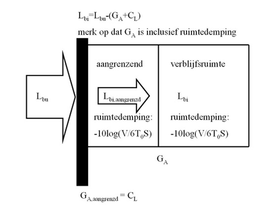
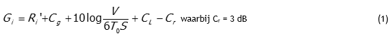
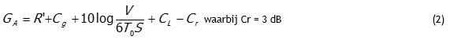
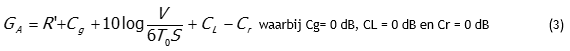
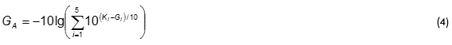

|
Top Previous |
|
In overleg met BSV (Bureau Sanering verkeerslawaai), de heer ir. E. Gerretsen en ir. Cauberg is de bijdrage van omloopgeluid via een in wendige scheidingsconstructie nader gespecificeerd. In onderstaande figuur staat het basismodel van een gekoppelde ruimte: 
Directe geluidoverdracht Bij directe geluidoverdracht vindt geluidtransmissie plaats via de gevel van buiten naar binnen (direct geluidveld naar diffuus geluidveld). De gevelgeluidwering per octaafband wordt berekend met behulp van formule 1: 
Indirecte geluidoverdracht Bij indirecte geluidoverdracht (omloopgeluid) vindt geluidtransmissie plaats via gevel, gekoppelde ruimte en interne scheidingsconstructie. Eerst moet de geluidtransmissie door de gevel van buiten naar binnen worden berekend. Vervolgens wordt de geluiddemping van de ruimte berekend. Daarna moet de geluidtransmissie door de interne scheidingsconstructie van binnen naar binnen (diffuus naar diffuus geluidveld) worden berekend.
De geluiddemping van de gekoppelde ruimte en de gevelgeluidwering per octaafband worden berekend met behulp van formule 2: 
Vervolgens wordt de geluidisolatie van de interne scheidingsconstructie berekend met behulp van formule 3: 
Om formule 4 in het programma te simuleren wordt automatisch bij "grenst aan"" de Cg op 3 dB gesteld (hierdoor wordt de Cr die altijd 3 dB is geneutraliseerd, zie scherm voorkeursinstelling). De CL wordt gelijkgesteld aan de met behulp van formule 2 berekende GA.
In het meegeleverde voorbeeldbestand KOPPELEN.GL is dit geïllustreerd. Bij <knieschot> staat voor de CL = 15.7 dB en Cg = 3 dB. Deze waarden zijn niet te wijzigen.
Herleidingsterm spectrum De gevelgeluidwering wordt tenslotte berekend met behulp van formule 4, nadat de gevelgeluidwering per octaafband is berekend. 
Eerst wordt de geluidwering van de gevel bepaald. Deze geluidwering is inclusief een eventuele tweede scheidingsconstructie. Daarna vindt pas een correctie plaats op het karakter van het buitengeluid. De herleidingsterm wordt derhalve maar een keer toegepast.
|